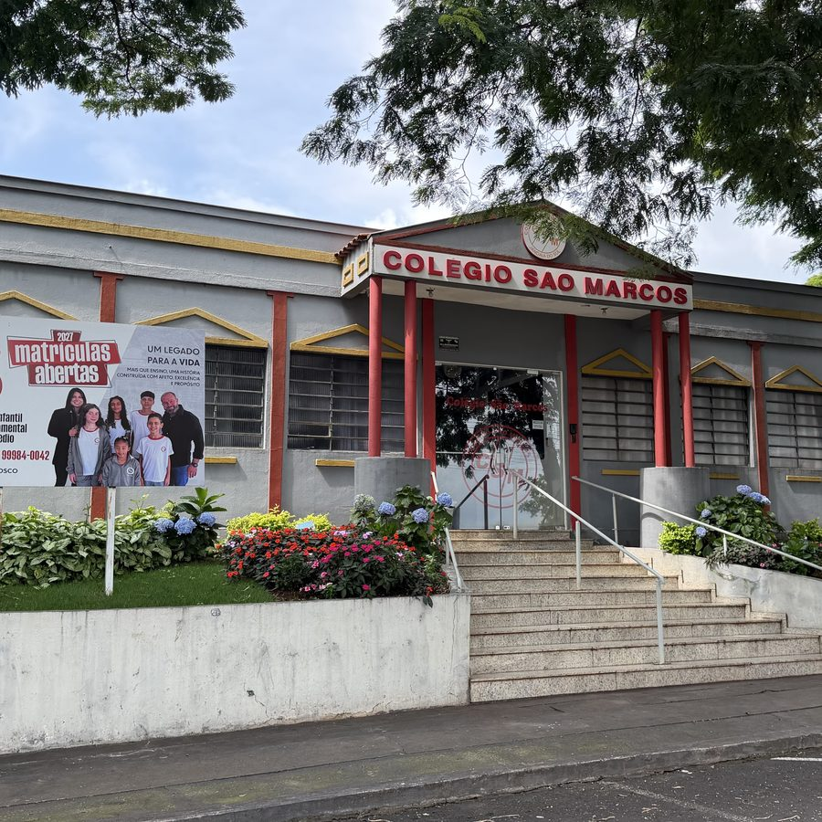

Desde 1991, o São Marcos prepara seus alunos para as mudanças do mundo, com ensino de qualidade e formação do caráter.
Oferecer à comunidade escolar um ensino diferenciado e comprometido com a qualidade, levando o aluno ao conhecimento e ao desenvolvimento do caráter.
Nossa meta é formar pessoas que contribuam para uma sociedade justa e respeitada.

Texto a ser definido com a direção do colégio.
a enviar pelo colégio
a enviar pelo colégio
Formar pessoas que contribuam para uma sociedade justa e respeitada.

O colégio conta com professores, coordenadores, orientadores e psicólogo, que trabalham juntos para atender às necessidades de cada estudante.
nomes da direção e da coordenação, se quiserem que apareçam
Algumas memórias do álbum do colégio.



descrição da parceria a confirmar
Agende uma visita e conheça a escola, a equipe e a proposta de ensino.